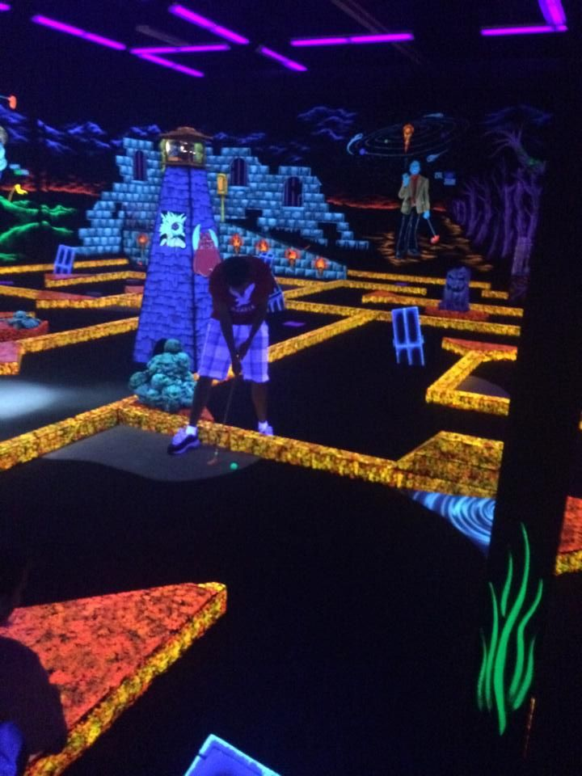

Crazy golf · West End
Swingers, West End
- Crazy golf starts at £12 per person, rising through packages that add Carnival games, a drink credit or a reserved area, up to £59pp.
- Family sessions run every day before 6pm, with children needing to be 7 or older and accompanied by an adult.
- Nine holes, four cocktail bars and rotating London street-food traders on site.

Photo of crazy golf, not this specific venuePhoto: TMBLover / Wikimedia Commons, CC BY-SA 4.0
What is Swingers, West End?
Swingers, West End is a nine-hole crazy golf course styled after a 1920s English seaside resort, just off Oxford Circus. Food comes from a rotating line-up of London street-food traders, including Pizza Pilgrims, Patty & Bun and Breddos Tacos, and there are four cocktail bars around the course. Carnival, a retro arcade with more than 30 games, sits alongside the golf as a second activity.
How does it work?
A round is nine holes, played in groups that tee off five minutes apart; at busy times it takes 30 to 40 minutes. Tickets are booked for a 30-minute arrival slot rather than a fixed playing time, so getting there at the start of the slot gives the best choice of tee-off times. Carnival works on a tap card: 30 minutes of unlimited play is included in some packages, or can be bought on its own.
Age policy
Family sessions run every day before 6pm, with last entry at 5pm. Children need to be 7 or older to play, and anyone under 18 must be accompanied by an adult. After 6pm, Swingers becomes an over-18s venue with a Challenge 25 policy, so anyone who might look under 25 will be asked for photo ID.
How much does it cost?
Golf can be booked on its own or as part of a package that adds Carnival, a drink credit or a reserved area.
| Package | Includes | Price |
|---|---|---|
| Crazy Golf | Round of crazy golf | £12pp |
| Swingers Experience | Golf, plus a Carnival Card (30 min unlimited play) | £19pp |
| Twin Set | Golf, Carnival Card, plus £20 drink credit | £35pp |
| Party Set | Golf, Carnival Card, £45 food and drink credit, reserved area for 90 minutes | £59pp |
Adult prices, from. Ticket prices vary by date and time, with the lowest rates on weekday afternoons before 5pm. Verified September 2026.
What that means in practice
- Adding Carnival through the Swingers Experience costs £7 more than golf alone (£19 vs £12). Buying 30 minutes of Carnival separately on the day costs £10, so booking it as part of the package is the cheaper route if you already know you want both.
- The jump from Twin Set to Party Set is £24 a head (£35 to £59), for a £25 bigger food and drink credit plus a 90-minute reserved area. It's worth it if a group would spend close to that anyway, or wants the space.
- Golf tickets can be booked for up to 24 people online. Larger groups go through the events team.
What is the food and drink like?
Food comes from a changing set of London street-food traders, including Pizza Pilgrims, Patty & Bun, Breddos Tacos and Crosstown, alongside a cocktail menu served across four bars. Vegetarian, vegan, gluten-free and halal options are available. Swingers West End is a cashless venue.
How do you get there?
Get directions on Google Maps ↗
15 John Prince's Street, London W1G 0AB. Oxford Circus and Bond Street stations are both a minute's walk away, putting it on the Central, Victoria, Bakerloo and Jubilee lines.
How do you book?
Golf tickets and packages are booked through Swingers' own website, released two months ahead of the date. Online tickets are non-refundable and can't be changed within 48 hours of the booking, though earlier changes can be made by phone.
Common questions
- How much does it cost to play crazy golf at Swingers, West End?
- Crazy golf alone starts at £12 per person. Packages that add Carnival games, a drink credit or a reserved area go up to £59 per person for the Party Set. Prices vary by date and time, with the lowest rates on weekday afternoons before 5pm.
- Where is Swingers, West End?
- 15 John Prince's Street, London W1G 0AB. Oxford Circus and Bond Street stations are both a minute's walk away.
- Is Swingers, West End an over-18s venue?
- Only after 6pm, when a Challenge 25 policy applies. Family sessions for under-18s run every day before 6pm, with children needing to be 7 or older and accompanied by an adult.
- What is Carnival?
- A retro arcade next to the golf course, with more than 30 fairground-style games. Thirty minutes of unlimited play costs £10 per person on its own, or comes included in the Swingers Experience, Twin Set and Party Set packages.
You might also like
Similar venues in London